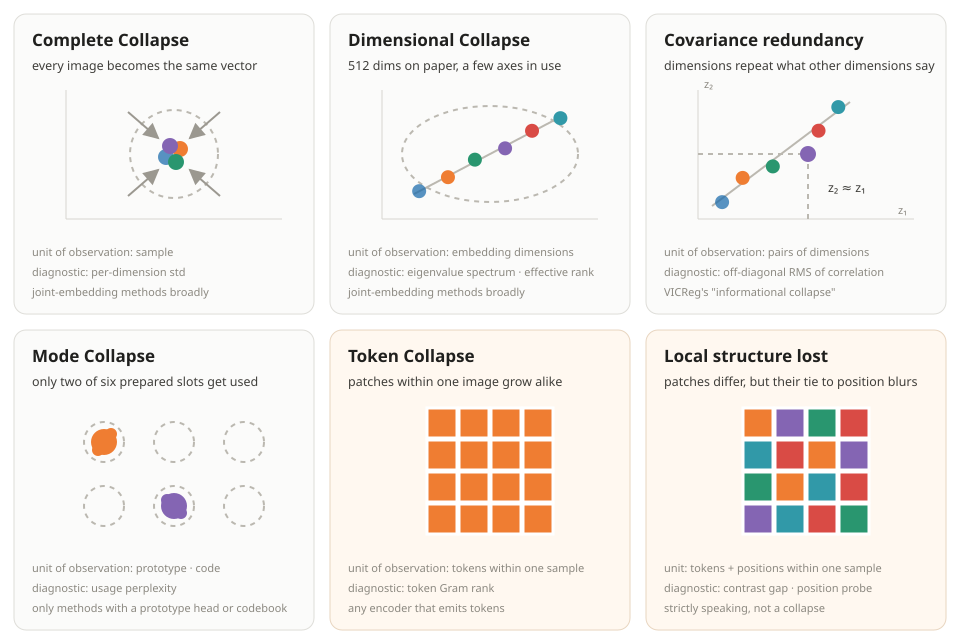

Self-Supervised Learning and Collapse
Update log
- Published.
The internet overflows with images, video and audio, but data where a person has written down the objects, scenes and sounds inside them is scarce. Self-supervised learning starts from this gap. Instead of people attaching answers, it builds a learning problem out of the data itself and has the model learn a usable representation by solving it.
There are many ways to pose the problem. You can restore masked pixels or waveforms, or match the representations of two pieces cut from the same image, video or audio clip. On the surface these look like similar pretraining, but the two problems differ in kind. Pixels and waveforms stay where they are no matter what the model does; representations move together with the model.
Making a moving representation the answer opens an unexpected shortcut. Send every input to the same vector and the two representations always agree. The loss is low, but no information remains. This phenomenon is called representation collapse.
That said, "just keep it from collapsing" is not the answer either. This article treats self-supervised learning as the problem of deciding what to preserve and what to compress between an input view and a target view. The two views here do not only mean two augmented images: the corrupted input → clean target of reconstruction methods is also two roles played by the same data: two views. Collapse-prevention devices do not protect all information. They only keep the compression from ending in the trivial solution that sends every input to the same value. So when the level at which the constraint is computed and the level the downstream task demands diverge, local information can vanish while the global representation looks perfectly fine.
The order is this. First we separate which learning problems open the shortcut, then survey the different types of collapse and how to diagnose them. Next we compare what methods like SimCLR, BYOL, DINO and VICReg tried to preserve. At the end we return to a less visible failure: per-image representations can be fine while per-patch structure disappears.
One scoping note up front. The collapse types collected here are not an exclusive classification but a map of failures with different units of observation, and the five prevention devices are not a census but the design patterns this article compares.
What is Self-Supervised Learning?
Learning from the data itself, without human labels.
In supervised learning we show an image together with a label a person wrote. Answer "car" on a cat photo and you are wrong. A model that gives every image the same answer also loses on most samples. The external answer holds the model in place.
Unlabeled data has no such answer sheet. That does not mean it has no learning signal. You can mask part of an image and have the model recover the original pixels, or transform one image twice and have it recognize that both came from the same image. Temporally adjacent video frames, or the next word of a sentence, also serve as answers. Nobody wrote the answers down; the structure inside the data provides the supervision. This is the basic idea of self-supervised learning (SSL).
SSL methods answer two big questions. First, what to predict? It can be an observed value like pixels or tokens, or the latent representation of another view. Second, what information must be the same across the two views? Object identity should survive crops and color changes, but the exact background color may not need to. A good pretext task fixes what to discard and what to keep through these two choices.
This is also why matching representations directly is attractive. Pixel reconstruction can spend capacity explaining the grain of grass or sensor noise. In representation space, by contrast, there is room to drop details judged unnecessary for downstream tasks. SimCLR, BYOL, DINO, VICReg and I-JEPA differ in implementation but all exploit this possibility.
But when the model also makes the answer, the external fixed point disappears. Call the two views from one image \(x_1,x_2\) and the encoder \(f_\theta\), and suppose we only shrink the distance between the two representations.
\[\mathcal{L}_{\text{match}}=\mathbb{E}\big[\lVert f_\theta(x_1)-f_\theta(x_2)\rVert^2\big]\]
The solution we want puts cats near cats and apart from cars. But looking at this objective alone, there is an easier solution. Set \(f_\theta(x)=c\) regardless of input and the two terms always agree; the loss is 0. The training problem is solved, and not one bit of information about the data remains.
This constant solution is called a trivial solution, and the phenomenon of the learned representation heading toward that solution or a similar low-dimensional state is called representation collapse. That a constant solution exists in the objective, that optimization actually reaches it, and that downstream performance is poor are not the same sentence. From here on we keep the three apart.
Of course, real methods do not use only the distance term above. SimCLR has negative samples, BYOL has stop-gradient, VICReg has a variance term. Some methods remove the trivial solution from the objective; others leave it in place and keep optimization from flowing there. Understanding collapse means asking what information these extra devices preserve.
In this article the name of an SSL algorithm is not the starting point. We look first at what target it builds, and which collapse it prevents at which level.
When Does Collapse Occur?
The form collapse takes depends on whether the target is fixed or moves together with the model.
Here the target is the answer \(y_i\) the model must hit. The data point \(x_i\) is the input, and the target \(y_i\) is the answer paired with that input. This section splits targets into raw observations, fixed cluster indices, learned cluster indices, fixed latents and learned latents. When a cluster method uses soft assignments, the target is a probability distribution over several clusters rather than a single index.
Consider predicting the pixel values of a masked region. If the model outputs the same color at every position, it cannot match the different original pixels. Pixels do not turn into a constant alongside the model during training, so the joint-embedding shortcut of both branches going to the same constant to zero the loss is closed. Non-constant targets made by a fixed tokenizer's codes or a frozen encoder anchor the problem for the same reason. Of course, in the extreme where the context gives no information about the target, a constant prediction like the mean can be optimal. What is ruled out here is strictly zero-loss joint collapse.
| Target \(y_i\) | State during training | Can a constant output reach loss 0? |
|---|---|---|
| Raw pixels · waveform (MAE's pixels) | fixed | Impossible (the answer differs per sample and position) |
| Fixed cluster index (the code indices of BEiT · BEST-RQ) | fixed | Impossible (provided distinct indices are actually in use) |
| Learned cluster index (SwAV's assignments, DINO's prototype distribution) | learned | Possible (everyone can pick the same cluster) |
| Fixed latent \(h_{\bar\phi}(x_i)\), a frozen encoder's output | fixed | Impossible (provided latents differ per sample) |
| Learned latent \(h_\xi(x_i^{(2)})\), the other view encoder's output | learned | Possible (the two branches can become the same constant) |
Reading the last column as "no prevention device needed" goes too far. What a fixed target rules out is a constant output for this matching loss. A strong decoder or a bypass path can leave the encoder underused, and a learned tokenizer or codebook can end up using only some codes. Representations sufficient for reconstruction but insufficient for semantic tasks, and overly local shortcuts, remain possible.
Conversely, if the target encoder is trained as well, the target itself can turn into a constant. The predictor and the target move together, so the moment the two agree on the same constant the matching loss vanishes. This is where collapse appears as a problem of the objective.
The reason to use learned representations as targets anyway is that you need not explain every pixel-level uncertainty. The exact position of leaves or the texture of grass is hard to predict from one crop, and may be unnecessary for a semantic representation. This is the background against which JEPA proposes predicting in representation space instead of pixels. The advantage of being able to discard information selectively, and the risk of being able to discard all of it, come from the same design.
MAE predicts pixels, BEiT the discrete tokens a tokenizer made, and BEST-RQ the indices of a fixed random codebook. These targets do not move to a constant together with the encoder being trained. So the devices against the joint collapse onto a constant target described in this section are unnecessary. That does not mean these methods are free of other failures such as information bottlenecks or low-quality representations.
In the language of information theory, the moment you make two views one assumption enters: the information shared by the two views is sufficient for later tasks, and information left in only one view may be discarded. Shwartz-Ziv and LeCun's (2023) review calls this the Multiview assumption and writes it as the condition that \(I(Y;X_2\mid X_1)\) and \(I(Y;X_1\mid X_2)\) are both small for the task \(Y\). That is, either view alone carries almost all the information the task needs. When the assumption holds, compressing view-specific detail can be desirable invariance.
The same review covers when the assumption breaks. If crops or color transforms change the label, or several downstream tasks demand different information, task-relevant information also sits in the unshared part. Compression then makes the representation insufficient without any complete collapse. So neither "compression = collapse" nor "a widely spread representation = a good representation". This is why collapse metrics and downstream performance stay separate to the very end of this article.
In the end, "how much compression is right" has no task-independent answer. The extreme that erases all information is clearly to be avoided, but how much non-shared information to keep is decided by the relation between the augmentations and the downstream task.
\[\begin{aligned} \text{fixed target: } &\min_\theta \mathbb{E}\lVert g(f_\theta(x)) - y(x)\rVert^2, \quad y \text{ does not move} \\ \text{jointly learned target: } &\min_\theta \mathbb{E}\lVert f_\theta(x_1) - f_\theta(x_2)\rVert^2 \;\;\Rightarrow\;\; f_\theta \equiv c \text{ gives } 0 \end{aligned}\]
Press play and the same initial model outputs train under the two objectives. On the left, each sample follows a different fixed target, so the outputs cannot all be pushed into one point. On the right, among the many solutions the bare matching loss admits, the shared encoder's scale shrinks and the two views ride together toward the constant solution, one possible collapse path. It does not mean this loss always takes that path.
model output target to matchone linked pair = same sample and position
Fixed cluster index: the code indices of BEiT · BEST-RQ
Fixed latent: a frozen encoder’s output
Learned latent: the other-view latent of BYOL · SimSiam, I-JEPA’s target-block latent
The 2-D positions of the dots schematize the output/target space. They are neither input-data coordinates nor cluster centroids. The left target can be an observation, a code or a latent, but stays fixed during training; the right target moves as the encoder processing the other view changes.
Types of Collapse and Related Failures
Six failures with different units of observation, collected in one place for comparison.
Two words first. Modern models do not look at an image whole; they cut it into small patches. Each patch maps to one vector, and that vector is called a token. One image becomes tens to hundreds of tokens, and averaging them gives one vector that summarizes the image. Call it the pooled vector. The "level" in the table below says whether a row is a story between images or inside one image.
| Name | What collapses | Unit of observation | Diagnostic statistic | Applicable models |
|---|---|---|---|---|
| complete collapse | every image becomes the same vector | sample | per-dimension standard deviation | joint-embedding methods broadly |
| dimensional collapse | representations confined to a low-dimensional subspace (512 dimensions on paper, three in actual use) | embedding dimensions | eigenvalue spectrum · effective rank | joint-embedding methods broadly |
| covariance redundancy VICReg's "informational collapse" | dimensions repeat what other dimensions say | pairs of dimensions | off-diagonal RMS of the correlation matrix | joint-embedding methods broadly |
| mode collapse | only a few of the prepared prototypes keep being used | prototype · code | usage perplexity | only methods with a prototype head or codebook |
| token collapse related: rank loss · over-smoothing | the patches within one image grow alike, or get confined to a low-dimensional subspace | tokens within one sample | token Gram spectrum · pairwise similarity | any encoder that emits tokens (SSL or supervised) |
| local structure lost | near and far patches become indistinguishable (strictly speaking not a collapse. See below) | tokens + positions within one sample | contrast gap · position probe | objectives with no per-position condition, or that reach only some positions |
The third row is renamed. Bardes et al.'s VICReg calls the state where axes move together informational collapse, but this article uses the narrower term covariance redundancy. The fact that the correlation matrix's off-diagonals are zero cannot by itself certify that the information a downstream task needs has survived.
Most names come from the literature. Hua et al. (2021) split the first two apart, pointing out that dimensional collapse is a distinct and often-overlooked state, and Jing et al. (2022) showed it occurs even in contrastive methods. The bottom two rows have names outside SSL as well: transformer rank collapse (Dong et al., 2021) and over-smoothing in deep ViTs. One more phenomenon, slightly different in kind, belongs alongside: the report of artifact tokens, low-information patches recycled as slots that gather global information (Darcet et al., 2023). V-JEPA 2.1's diagnosis, seen later, has exactly this shape.
A caution here. Patches growing alike can happen regardless of the objective. There is a story that stacking attention deeply does this on its own. But do not inflate the evidence: Dong et al.'s theorem is about pure attention with no skip connections and no MLPs, and the paper's own conclusion is rather that "skip connections play a key role in mitigating rank collapse". A real ViT is not the case the theorem covers. Still, there are separate reports that patch representations grow alike in deep supervised ViTs (Gong et al., 2021; DeepViT). So the discussion below can claim only "observed under SSL objectives", not "caused by SSL objectives".
The six rows overlap, and they are not even concepts on the same level. Dimensional collapse (fewer dimensions in use) and covariance redundancy (dimensions saying the same thing) are usually two descriptions of one event. Mode collapse is a failure of the head that picks prototypes, not of the representation itself, so it is not even defined for VICReg or BYOL, which have no such head. Local structure lost is, strictly, not a collapse. Patches can stay plenty distinct while only their tie to position blurs. They still share one table because the places to hang diagnostics are the same, not because they are the same kind of failure.
Two things to remember in practice. Complete collapse tends to reveal itself readily in modern recipes and can be caught quickly with unnormalized per-dimension standard deviations (the measurement pitfalls come in the next section). Partial dimension loss and local structure loss are much quieter. Also, the top four rows look between images while the bottom two look inside one image. The patches within an image can grow alike while per-image pooled vectors stay distinct, so watching only the upper metrics can miss this failure.
The symptom "the dense features are weak" is usually the bottom two rows. Dense features here are representations for tasks that need one vector per position rather than one per image: segmentation, depth estimation, per-frame prediction. Watch classification accuracy alone and this failure stays invisible to the end.
The figure below compares only the typical shapes of the six states. The two warm-tinted panels are the within-image stories (the same two rows highlighted in the table), and the other four are between-image stories. Real high-dimensional representations are more complicated than a 2-D drawing, so treat this as a concept map, not a diagnostic standard.

Measuring Collapse
Metrics for noticing, during training, which kind of collapse is under way.
Separate two questions first. 1) Has the representation collapsed to a trivial or low-dimensional state? 2) Does the information the downstream task needs remain? Every metric below serves question 1), which is why they can be measured during training without labels. Question 2) is different. As the Multiview assumption of the earlier When Does Collapse Occur? section says, "what counts as needed information" is decided by the task, so no answer comes without a task, a probe or explicit assumptions. Try to answer both questions with one metric and the misunderstanding that spread-out means good begins. Noise or a position code alone can push rank up just fine.
Three terms, unpacked in advance. Effective rank counts "how many of the 512 dimensions are actually in use" (normalize the covariance eigenvalue spectrum, summarize it with entropy, exponentiate). The Gram matrix is the full table of how alike the patches within one image are. When patches clump, this table's rank drops. Perplexity counts "how many of the prepared prototypes are effectively in use".
| What it measures | Target | Failure caught |
|---|---|---|
| median and bottom 5% of per-dimension standard deviations | pooled | complete collapse (depends on how you measure. See below) |
| effective rank and the eigenvalue spectrum | pooled | dimensional collapse |
| RMS of the correlation matrix minus its diagonal | pooled | covariance redundancy |
| mean and coefficient of variation of vector norms | pooled | norms exploding or vanishing |
| how evenly things are spread (uniformity) | pooled | not one point, but crowded into a corner |
| token Gram rank | token | token collapse (unlike mean cosine it is not fooled by sign, though a position code alone can raise it) |
| mean and top 5% of patch-pairwise cosine | token | token collapse (the mean alone misses it. See below) |
| contrast gap: the similarity difference between adjacent and distant patches | token | local structure lost |
| position probe: predict which grid cell a patch came from, given only its vector | token | local structure lost |
| within-image variance ÷ between-image variance | both | whether the two levels have diverged at all |
| standard deviation and drift of teacher outputs | slowly trailing target | the target side collapsing first |
| prototype usage frequency and perplexity | prototype head or codebook | mode collapse |
Standard deviation says different things depending on where you measure it. Measured after normalizing vectors to unit length, you see only direction and miss the collapse where whole vectors shrink. Measured without normalization you see length too, but scales differ across methods and comparisons get hard. Keep both, and read how far things have collapsed from the rank side.
The trap in dividing effective rank by 512: when the batch size \(n\) is smaller than the dimension \(d\), the number of eigenvalues that can even be nonzero is capped at \(\min(n-1,d)\). Even a perfectly spread representation tops out at \((n-1)/d<1\). Read against 1 only when \(n \ge d\); otherwise compare only runs with equal batch sizes.
Mean patch cosine is fooled by sign. Imagine patches lying on a single axis with mixed signs: half at \(+v\), half at \(-v\). Every pair's cosine is +1 or −1, so the mean sits near 0. Looks very healthy. Yet the patches all lie on one 1-D line and the Gram rank is on the floor. Already collapsed, and the mean tells you nothing. So the default metric should be Gram rank, and any cosine reading must come together with an upper percentile (in the case above the top 5% is pinned at 1).
Gram rank is no cure-all either. Patches can all differ while their differences are shuffled independently of position: Gram rank high, yet the distinction between "top-left and bottom-right" already gone. Hence two position-aware metrics: the similarity difference between adjacent and distant patches (the contrast gap), and predicting which grid cell a patch came from given only its vector.
The position probe has one big trap, though. A ViT adds positional information at the input stage, so position survives partly for free. Even a thoroughly collapsed model can score high on it. What this metric measures is not dense performance but "does the patch still remember where it was". Do not read absolute values as performance; read differences between matched conditions, and read whole curves, not single points.
Do not fix thresholds in advance. Embedding scales themselves differ by method, so there is no universal "danger below 0.3". It is right to raise alarms on sharp drops or spikes relative to the early stable stretch of training. If it collapses from the very start there is no stable stretch. Use the value measured at random initialization, before training, as the baseline.
The act of measuring must not change training. Never add these to any loss, of course, and do not use them for learning-rate control or best-checkpoint selection either. Compute them without gradients, and do not run them inside the training forward at every step. Run an SVD per step and training speed differs per condition. Finally, use a separate random stream: draining the randomness used for data order and masking breaks reproducibility.
Finally, back to the two questions of the first paragraph. All the metrics above are tools for question 1). A high Gram rank does not make segmentation work. Not having collapsed is a necessary condition of a usable representation, not a sufficient one. Li, Efros, Pathak (2022) faced this gap head-on, reporting that under partial collapse the metrics and the performance do not move in step.
To measure question 2) you need the task-side tools after all: a linear probe, k-NN, and, if dense is the worry, a segmentation probe on frozen features. These three can also disagree; a pretraining can win at linear probing and lose at fine-tuning, a rank reversal. So in practice it is safest to watch the collapse metrics and the task probes together.
1. Negative Samples
Writing the condition "must differ from the other photos" directly into the loss.
The five sections from here are five "design patterns". Not a census, and not mutually exclusive. Real methods usually stack several devices. DINO uses stop-gradient/EMA together with centering–sharpening, and DINOv2 adds iBOT and KoLeo on top. Even methods placed in the same cell do not work identically (Barlow Twins and VICReg, for one). The criterion for cutting five was "each represents a different kind of answer", not completeness of classification. The later table counts at least two more devices that fit none of the five.
Each of the five sections carries the device's pseudocode alongside. The way to read it is to look at the tensor shapes first. What an encoder emits is always patch tokens \((N,P,d)\), and Algorithms 1–7 all fold that \(P\) axis with pooling before applying a loss. If \(P\) appears nowhere in the loss, the device is applied to the pooled embedding and never looks at what happens inside one image. Only Algorithms 8–10, placed in the later token-level section, keep \(P\) to the end. Laying the two groups side by side is the shortest definition of the level this article talks about.
The idea is simple. Two views of the same photo pull together, and push against the other photos in the batch. The moment everything tries to head to one vector, the pushing force works against it, so the cheating answer costs from the start. The InfoNCE that CPC introduced has this form, and SimCLR and MoCo made it a major success on images.
\[\mathcal{L}_i=-\log\frac{\exp\!\big(\mathrm{sim}(z_i,z_i^+)/\tau\big)}{\sum_{k\neq i}\exp\!\big(\mathrm{sim}(z_i,z_k)/\tau\big)}\]
How to read the equation. The numerator is the similarity to the other view of the same photo, the pulling force. The denominator is the sum of similarities to every photo in the batch, the pushing force. \(\tau\) (temperature) is the knob deciding whether to push hardest on only the nearest neighbors or push everything evenly but weakly. If everything clumps at one point, all terms in numerator and denominator become equal and the loss pins to the constant \(\log(2N-1)\), which is not the floor.
Why this works has been explained rather cleanly. Wang & Isola (2020) decomposed this loss into two terms. Alignment says "two views of one photo should be close"; uniformity says "representations should spread evenly over the sphere". With alignment alone everything gathers at a point; the part that prevents collapse is uniformity. But remember the scope in which the decomposition holds. It is an analysis of the InfoNCE form with \(\ell_2\)-normalized embeddings placed on the sphere. "What negatives do is exactly uniformity" must not be generalized to every negative-based objective.
Still, the decomposition works as a lens for reading the other four. The devices to come also keep representations from crowding into one place; what changes is what gets spread evenly: distance on the sphere here, and later per-dimension variance, the shape of the embedding distribution, and prototype usage frequency.
The basic in-batch implementation often benefits from more negatives; SimCLR itself compared batches grown from 256 to 8192. But a large batch is not a requirement of every contrastive method. Use a queue like MoCo and the negative count decouples from the batch size. And a batch also contains photos of genuinely the same kind, giving the false-negative problem of forcing two cat photos apart.
MoCo's workaround comes from here. It makes one encoder the EMA (exponential moving average, a slowly trailing copy) of the other and stacks past batches' vectors in a queue, detaching the negative count from the batch size. Here the EMA is not a collapse-prevention device. The blocking is done by the negatives, and the EMA keeps the old vectors piled in the queue mutually consistent. Indeed, set the momentum to 0 and training fails to converge, not because the negatives vanish, but because the target changes abruptly every step and the queue becomes meaningless. Its role is completely different from the EMA of the next section.
Where it acts: between the images in a batch. That is the base form, though. Where the pushed-against samples come from can change. wav2vec 2.0 draws them from within the same utterance, moving the same device inside one sample.
# f(x) : (N, P, d) patch token
# z = f(x).mean(1) -> (N, d) P folded here
# no P axis below -> pooled embedding loss
z = F.normalize(torch.cat([z1, z2])) # (2N, d)
sim = z @ z.T / tau # (2N, 2N)
sim.fill_diagonal_(-float("inf")) # drop self-pairs
pos = torch.cat([torch.arange(N, 2 * N),
torch.arange(0, N)]) # (2N,)
loss = F.cross_entropy(sim, pos) # scalar
# (2N, 2N) relates images to images. Not patches.
# full collapse pins it at log(2N-1). Not the floor.# q : (N, d) student. k : (N, d) EMA encoder
# queue : (d, K) negatives piled from past batches
# again the only axis is N -> pooled embedding loss
l_pos = (q * k).sum(1, keepdim=True) # (N, 1)
l_neg = q @ queue # (N, K)
logits = torch.cat([l_pos, l_neg], 1) # (N, 1+K)
loss = F.cross_entropy(logits / tau, zeros_long(N))
# the label is 0
for pk, pq in zip(f_k.param(), f_q.param()):
pk.data = m * pk.data + (1 - m) * pq.data
# growing K decouples negatives from batch size.
# EMA (m ~ 0.999) is not the anti-collapse device.
# l_neg does that; EMA keeps the queue coherent.2. Stop-Gradient and Asymmetry
Making the gradient path asymmetric instead of changing the loss.
This section has to open with its limits. The devices here do not erase the constant solution from the objective. Send every input to the same vector and the loss is still exactly 0, and if the target is already constant, nothing in the loss keeps the student from following it there. So read what follows as being about a device that breaks the left–right symmetry of the gradients, not a sufficient condition, for preventing collapse. Why BYOL and SimSiam do not actually collapse is the tangled result of the predictor, normalization, optimization dynamics and initialization, and has not yet been settled in one sentence.
With that line drawn, the analogy: when two parties try to match each other, the gradients are left–right symmetric and "both stand still" is the cheapest agreement. Cut the gradient on one path and that symmetry breaks. This is what BYOL and SimSiam do.
Three parts usually appear together. Stop-gradient keeps the target path from being updated directly by gradients. The predictor attaches a small network to the student side only, making the two paths different. Methods using EMA update the target network as a slow average of the student parameters. I-JEPA and V-JEPA use all three. DINO has no separate predictor, and in data2vec the student, processing masked input, directly predicts the representation of a full-input teacher.
\[\begin{aligned} \mathcal{L} &= \big\lVert q_\theta(f_\theta(x_1)) - \mathrm{sg}\big[f_{\bar\theta}(x_2)\big] \big\rVert^2 \\ \bar\theta &\leftarrow m\,\bar\theta + (1-m)\,\theta, \qquad m \approx 0.996 \end{aligned}\]
SimSiam showed that, at least in its recipe, training works with stop-gradient and a predictor alone, without EMA. That result means asymmetry is an important clue, not that EMA is mere decoration in BYOL, DINO and JEPA. DINO in fact collapses in the ablation that removes the momentum teacher.
That what blocks collapse is the path training flows along, not the loss, is more than a figure of speech. Tian, Chen, Ganguli (2021) linearized these dynamics and showed that with a predictor and stop-gradient the directions heading toward the constant get suppressed. But this analysis, too, is a result on a linearized model.
So why it is sufficient is still being debated. Famous is Fetterman & Albrecht's (2020) reading that batch normalization inside the predictor secretly plays the role of negatives, which Richemond et al. (2020) rebutted by showing BYOL runs fine with normalization that uses no batch statistics. No conclusion yet.
In implementation, reproduce the paper's normalization and teacher state exactly. Drop the output normalization and a bypass can open that lowers the distance loss by shrinking the representation's scale. There is no universal rule to keep the teacher in eval(), though. How batch normalization's running statistics and dropout are handled differs by method and official implementation, so do not treat cutting gradients and the train/eval mode as the same setting.
A caution when comparing strength. For other methods you double a coefficient; here "applying it harder" means moving momentum from 0.99 to 0.999. The axis is entirely different. And having no coefficient does not mean having no tuning. The momentum and its warm-up, the predictor's size and depth, and the target normalization scheme are all real knobs.
Where it acts: everywhere, but implicitly. With no term in the loss, you cannot read from the equation where the force lands. What it blocks is all inputs becoming the same, and the unit at which that statistic is computed is decided not by this device but by the matching loss it rides on. Put it on pooled vectors as BYOL does and it touches only relations between images; put it on a per-patch loss as I-JEPA does and it reaches the patch level too.
# f : online, f_t : EMA copy, h : predictor
# both emit (N, d), pooled down from (N, P, d)
# D is a distance between (N, d) -> pooled loss
p1 = h(f(x1)) # (N, d) through predictor
t2 = f_t(x2).detach() # (N, d) <- stop-gradient
loss = D(p1, t2)/2 + D(h(f(x2)), f_t(x1).detach())/2
for pt, ps in zip(f_t.param(), f.param()):
pt.data = m * pt.data + (1 - m) * ps.data
# m: 0.996 -> 1.0 schedule. Here "stronger" means
# momentum, not a coefficient. A different axis.# one f on both sides. No copy.
z1, z2 = f(x1), f(x2) # (N, d)
p1, p2 = h(z1), h(z2) # (N, d)
loss = D(p1, z2.detach())/2 + D(p2, z1.detach())/2
# ^^^^^^^^^ this detach breaks the symmetry
# remove the detach and it collapses; keep it, it holds.
# yet nothing here rules out the constant solution.
# map every input to one vector: the loss is still 0.
# what blocks it is the gradient path, not the loss.
# the level is not set by this device. Keep z above
# as (N, P, d) instead of pooling: token level.
# I-JEPA sits exactly there.3. Centering and Sharpening
Preventing collapse by balancing two forces that push in opposite directions.
The picture first. DINO does not compare representations directly; it converts them into a probability distribution over \(K\) prepared prototypes, like "this photo looks like entry 3". The two views are then trained to pick the same entry. That can break in two ways. Everyone picks only entry 3, or nobody makes a decision and every entry gets the same probability.
So two forces are applied. Centering subtracts the batch mean from the teacher's outputs so no single entry can run away with everything. Sharpening lowers the temperature to make the distribution peaky, a push to "make a decision". One pushes toward using entries evenly, the other toward deciding firmly.
\[\begin{aligned} p_t &= \mathrm{softmax}\big((g_{\bar\theta}(x)-c)/\tau_t\big), \quad p_s = \mathrm{softmax}\big(g_\theta(x')/\tau_s\big) \\ c &\leftarrow m\,c + (1-m)\,\tfrac{1}{B}\textstyle\sum_i g_{\bar\theta}(x_i) \end{aligned}\]
The paper's own summary is the same. Centering prevents one entry from dominating but pushes toward the uniform distribution; sharpening pushes in exactly the opposite direction. Applied together, the effects cancel and collapse is avoided. But the attached qualifier must not be dropped: in the paper's words, "sufficient to avoid collapse in presence of a momentum teacher". The balance is sufficient on the premise that an EMA teacher is present.
The temperature goes up. DINO fixes the student's \(\tau_s=0.1\) and raises the teacher's \(\tau_t\) from 0.04 to 0.07 over the first 30 epochs. This passage is often quoted in the opposite direction. The appendix's report goes like this: above \(\tau_t=0.06\) the training loss converges to \(\ln K\), but starting from a small value and raising it over the first few epochs keeps even higher values from collapsing. A loss going to \(\ln K\) means collapse to the state that gives every entry the same probability. So the dangerous side here is high temperature, and the warm-up is the ladder for using that range safely. But the number 0.06 and the direction "high → uniform collapse" are observations under DINO's schedule, architecture and teacher setup. Change the prototype count or the teacher configuration and the same value does not mean the same thing.
The centering slot is swappable, and in fact older than DINO. The role "even out entry usage within a batch" starts with SeLa's (2020) equipartition constraint. Cast the label assignment as an optimal transport problem and force an even split. SwAV moved that to soft Sinkhorn-Knopp assignments on minibatches, DINO's centering is a much lighter implementation of the same role, and DINOv2 goes back to Sinkhorn-Knopp. "Centering" is best read as the name of a role, not of one implementation.
Trade-offs. Blocking the two failures each explicitly makes the diagnosis crisp (you can see which one blew up), and "entry usage frequency" comes free as a directly visible metric. In exchange, this has the most places to touch: two temperatures, the center momentum, the warm-up schedule. When the balance tips, it goes over in one of the two directions.
Where it acts: batch statistics + the distribution. The center is a batch mean, so this is plainly a between-images story.
The simulation pushes 64 photos through the teacher. The two forces show up in different numbers, so both are displayed. Turn centering off and everyone picks the same entry, and perplexity falls to 1. Turn sharpening off and entry usage is perfectly even while the per-photo entropy pins at its maximum: using everything evenly while distinguishing nothing.
# f(x) : (N, P, d) -> CLS or mean -> (N, d)
# g(z) : (N, K) distribution over K prototypes
# no P axis below -> pooled embedding loss
# iBOT puts the same term on (N, P, K) -> Algorithm 8
s = F.log_softmax(g(z2) / tau_s, -1) # (N, K)
tl = g_t(z1).detach() # (N, K)
t = F.softmax((tl - C) / tau_t, -1) # center,sharp
loss = -(t * s).sum(-1).mean() # scalar
C = m * C + (1 - m) * tl.mean(0) # (K,) batch mean
# tau_t rises 0.04 -> 0.07 over the first 30 epochs.
# because the dangerous side is high temperature.
# above 0.06 the loss converges to log K: the state
# giving every entry the same probability.
#
# delete one line at a time; the failures diverge:
# remove the -C -> usage perplexity falls to 1
# tau_t = 1.0 -> per-photo entropy hits its max4. Variance and Covariance
Writing variance and covariance conditions directly into the loss.
If the previous two are indirect, this is the frontal assault. Collapse, in the end, means "the representation is not spread out", so write "be spread out" directly into the loss. VICReg does exactly that.
Three terms. Invariance keeps the two views close. Variance requires each dimension's standard deviation to be at least \(\gamma=1\) (penalty if it falls short). Covariance keeps the dimensions from repeating each other. The coefficients are 25 / 25 / 1.
\[\begin{aligned} v(Z) &= \tfrac{1}{d}\textstyle\sum_j \max\!\big(0,\;\gamma-\sqrt{\mathrm{Var}(z_j)+\epsilon}\big) \\ c(Z) &= \tfrac{1}{d}\textstyle\sum_{i\neq j} [C(Z)]_{i,j}^2 \\ \mathcal{L} &= 25\,s(Z,Z') + 25\,[v(Z)+v(Z')] + 1\,[c(Z)+c(Z')] \end{aligned}\]
The variance term rules out the constant solution directly. If all representations become equal, the standard deviation hits 0 and each dimension keeps a positive penalty of \(\max(0,\gamma-0)=\gamma\). The covariance term reduces the state where axes keep repeating each other. But pushing the off-diagonals to 0 is a constraint on the covariance structure, not a guarantee that the representation carries the information the task needs. Thanks to these two terms, VICReg trains with a symmetric architecture: no EMA, no stop-gradient, no negatives.
Barlow Twins looks similar but handles variance differently. Barlow Twins builds the cross-correlation matrix of two batch-standardized views and pushes the diagonal to 1 and the off-diagonal to 0. Under constant output the standardization itself degenerates and the diagonal cannot reach 1. So rather than crediting collapse prevention to the normalization alone or to the diagonal loss alone, it is more accurate to see it as a property of the whole cross-correlation objective with standardization included. VICReg makes the role more explicit by exposing the minimum standard deviation as its own loss term.
A precedent already moves the same criterion one level down. VICRegL (2022) applies the three terms not only to whole-image vectors but to local features paired across the two views. Do not forget this precedent when the later discussion moves global criteria to the patch level.
KoLeo looks similar but its emphasis differs. DINOv2 widens, in normalized embeddings, each sample's distance to its nearest neighbor (\(-\frac1n\sum\log d_i\)). If everything gathers at one point the distances become 0 and this value diverges, so functionally it rules out complete collapse. In DINOv2's ablation, removing KoLeo drops Oxford-M retrieval from 63.9 to 55.6 while ImageNet-1k classification moves 85.8 → 85.3 and ADE20k segmentation 47.1 → 47.2, barely at all. This alone cannot support the conclusion that KoLeo plays no anti-collapse role: the measurement was taken inside a recipe that already carries other devices. Where the variance term demands a per-dimension variance floor, KoLeo directly widens sample-to-sample proximity on the unit sphere.
The multi-GPU trap. Compute variance and covariance separately per GPU and the "batch statistics" are really one GPU's statistics. Change the GPU count and you change the device's strength. Gather the batch with a gradient-passing all-gather and it behaves as designed. The same problem exists for the batch norm inside the predictor back in the stop-gradient section, and hiding inside a standard layer makes it easier to miss there.
Where it acts: the batch's per-dimension statistics. The base form stops there and places no condition on the relations among patches within one image, which is why VICRegL, moving the same three terms to paired local features, is a separate extension.
# z1, z2 : (N, d) pooled embedding
# statistics run along N (the batch) -> pooled loss
# VICRegL puts the same three terms on (N, G, d)
z1 = all_gather_with_grad(z1) # (N_all, d)
z2 = all_gather_with_grad(z2)
# ^ per-GPU stats tie the strength to the GPU count.
sim = F.mse_loss(z1, z2) # scalar
def var_cov(z): # z: (N, d)
z = z - z.mean(0) # (N, d)
std = torch.sqrt(z.var(0) + 1e-4) # (d,)
v = F.relu(1.0 - std).mean() # scalar
cov = (z.T @ z) / (z.shape[0] - 1) # (d, d)
c = off_diagonal(cov).pow(2).sum() / d
return v, c
loss = 25 * sim + 25 * (v1 + v2) + (c1 + c2)
# (d, d) relates axis to axis, measured along N.
# set it beside Algorithm 10’s (N,P,P).5. Distribution Regularization
A recent approach that specifies the target shape of the embedding distribution, folding several statistical conditions into a single test.
The previous methods attached conditions one at a time. Push each other apart, spread each axis this much, use the entries evenly. This one specifies the goal shape outright. The whole representation should form an isotropic Gaussian (a normal distribution spread equally in all directions). A distribution piled at one point differs extremely from a Gaussian, so it is excluded automatically; so is a distribution flattened along particular directions. Complete collapse and dimensional collapse get caught by one term together.
How do you compare high-dimensional distributions? Directly, it is hard. So SIGReg, introduced by LeJEPA, looks at shadows. Draw \(M\) random directions, press the representations flat along each to make 1-D values, and test whether each follows a normal distribution. If the shadows taken from many angles all match, the original object matches too. That is the logic.
\[\begin{aligned} u_m &\sim \mathrm{Unif}(\mathbb{S}^{d-1}), \quad m=1,\dots,M \\ \mathcal{L}_{\text{SIGReg}} &= \tfrac{1}{M}\textstyle\sum_m T_{\text{EP}}\big(\{\langle z_i, u_m\rangle\}_i,\;\mathcal{N}(0,1)\big) \end{aligned}\]
The shadow logic has a foundation. The Cramér–Wold theorem (1936) says that if the 1-D shadows agree in every direction, the original distributions agree. But there is a gap between the theorem and the implementation. The theorem is a statement about all directions, while in practice only a finite \(M\) are drawn. Passing on \(M\) directions carries no guarantee about the whole; it is a Monte Carlo approximation steering in that direction.
"Why isotropy, of all things" has an old lineage. Making the projections of two views maximally correlated is Hotelling's canonical correlation analysis (1936), which carries a whitening constraint fixing each view's projected covariance to the identity. With the two projections centered and whitened, maximizing their correlation and minimizing their squared distance become interchangeable problems. In this respect joint-embedding SSL resembles CCA: the matching term corresponds to the correlation objective, and explicit variance–covariance constraints correspond to the whitening constraint. The stop-gradient family cannot be slotted into this correspondence as cleanly.
Seen from this angle, the camp that writes statistics into the loss can be lined up by how far each imitates the whitening constraint. W-MSE whitens embeddings explicitly, VICReg's variance and covariance terms are the same constraint softened into penalties, and SIGReg goes past second moments to nail down the whole distribution, one notch harder. The limits of this lineage-reading are equally clear. Methods using stop-gradient, EMA and predictors write no constraint into the loss and do not fit the line cleanly. Deep CCA (2013), which moved the projections to neural networks, is the precedent, and Balestriero and LeCun (2022) organize the same lineage by reducing VICReg, SimCLR and Barlow Twins each to a corresponding spectral method.
One implementation caution. Do not re-divide each direction's shadow by that minibatch's own standard deviation. Doing so makes even a nearly collapsed Gaussian cloud of tiny variance look unit-variance, masking scale collapse. A fully constant sample has zero standard deviation and creates a separate numerical problem on top.
How far has it actually gone? LeWorldModel (Maes et al., 2026) showed a world model trained end-to-end from pixels with just two terms, this regularizer and one prediction loss, with no EMA teacher and no pretrained encoder. The paper's claim is that the tunable loss hyperparameters drop from 6 to 1 against the only prior end-to-end alternative. Note that the prediction there is next-step prediction conditioned on actions, not masked-patch recovery. Do not read it as "validated together with patch-level prediction".
Trade-offs. One coefficient means few loss hyperparameters to tune, though the stop-gradient side, which has no coefficient at all, still has real knobs in the momentum and the predictor, so what is few is the coefficients written in the loss, not the knobs overall. With no teacher copy it saves memory too. In exchange, whether an isotropic Gaussian is always the right goal is an open question. If the data actually lies on a much lower-dimensional surface, the demand "spread equally in every direction" can become pressure that crushes structure. And one coefficient does not make that one unimportant. The ratio of this term to the invariance term is exactly "how much to spread versus how much to pull together", and that ratio sets the representation's character.
Two implementation traps as well. Draw the directions identically every step from a fixed seed, and a detour opens where the encoder pretends to be Gaussian on those directions only. Redraw every step to keep the intent alive. And some implementations replace the test statistic with an MSE between sorted values and Gaussian quantiles. That is a different estimator. If you build it that way, do not keep the name; state that it is a variant.
Where it acts: the batch-wide embedding distribution.
The top panel shows the scattered representations and one of the directions (the orange line); the bottom panel shows the 1-D shadow pressed along that direction against the target normal curve. Drag toward collapse and the shadow narrows whichever way you cut, and the statistic soars. Reduce the direction count \(M\) and the statistic fluctuates. That is the price of a finite \(M\).
# z : (N, d) pooled embedding. The stat axis is N.
U = F.normalize(torch.randn(d, M), dim=0) # (d, M)
# ^ redraw every step. Fix the seed and the encoder
# can fake normality "on those M directions only".
proj = z @ U # (N, M) 1-D shadows
# proj = proj / proj.std(0) <- do NOT do this.
# a near-collapsed narrow cloud looks unit-variance.
sig = epps_pulley(proj, Normal(0, 1)).mean()
loss = pred_loss + lam * sig # one coefficient: lam
# the test sees each column of (N, M): a sample
# gathered along the batch. Within-image structure is unseen.Prediction or Invariance?
Splitting methods by where the target sits. Not a standard taxonomy, but the operational criterion this article uses to read models.
| Prediction: predict a hidden or future target | Invariance / view matching: align two observed views | |
|---|---|---|
| This article's criterion | target and loss sit at unobserved positions created by masking or the time axis | matches the representations assigned to two observed views (masked views belong here too when there is no per-position target for the blanks) |
| Kind of target | can be pixels or fixed tokens, or a learned latent representation | the other view's representation, probability distribution, cluster assignment and so on |
| Spatial unit | usually patch · token · future step, but a next scene's global state is possible | pooled vectors are common, but local features occur too, as in DenseCL · VICRegL |
| Representatives | MAE · BEiT · BEST-RQ (fixed target) I-JEPA · V-JEPA · data2vec (learned latent target) | SimCLR · BYOL · DINO · VICReg · LeJEPA |
The prediction this table speaks of is narrower than the everyday "predicting something". A method lands in that column only when the target sits at an unobserved position, such as a hidden patch or a future step. Within it, what gets predicted splits again. I-JEPA, V-JEPA and data2vec predict a learned representation \(z\); MAE, BEiT and BEST-RQ predict pixels or fixed tokens \(x\). This \(z\)-versus-\(x\) axis is the same axis as the earlier section on fixed versus jointly learned targets, and is independent of the prediction-versus-view-matching axis.
One common confusion: "it has a predictor" does not mean "prediction side". BYOL has a predictor too. In BYOL the predictor is part of the collapse-blocking asymmetry, unrelated to what is being matched. The predictor is not the criterion that splits the pairing.
The canonical global view-matching recipe summarizes one image into one vector and then compares. In that case the loss carries no condition about which position should become what. In a ViT the summary can be the mean or the CLS token. Either way, what the loss directly sees is one vector.
# prediction side
loss = distance( pred[masked_patch], target[masked_patch] ) # patch <-> patch correspondence
# invariance side (two ways to summarize a ViT)
z1 = projector( view1.tokens.mean(patch_dim) ) # average pooling
z1 = projector( view1.cls ) # or CLS token
loss = distance(z1, z2) # either way, no per-position condition"The loss never compares patches directly, so patches don't get trained" is wrong. CLS or mean, the gradients flow through attention down into the patch tokens. DINO indeed showed attention maps in which object outlines emerge, with no patch-level term. The precise statement is that there is no per-patch target. Good local features can emerge, but that objective alone does not directly specify per-position properties.
DINOv2 and DINOv3 do not fit the table cleanly. DINO itself belongs in the invariance column, but DINOv2 adds a patch-level iBOT term (Zhou et al., 2022) on top, and DINOv3 stacks Gram anchoring on top of that. They should be read as hybrids straddling both columns.
Here it becomes clear why the criterion set earlier could not be "presence of patch correspondence". DenseCL adds a pixel(patch)-level contrastive term to MoCo-v2: it fixes correspondences between feature-map positions and applies negatives on that correspondence. Patch correspondence sits explicitly in the loss. And yet it is on the invariance side. There is no unobserved position created by masking, so no loss lands on blanks. Both views are fully observed images that only went through augmentation, and corresponding positions pull close while other positions drawn as negatives push away. That is all. Patch correspondence can freely enter the invariance side too (DenseCL · VICRegL), and having a correspondence does not automatically make prediction. Conversely, iBOT's patch term fills the blanks masking created, so it has correspondence and sits on the prediction side.
How the views are made is another, half-independent axis. Multi-crop in particular collides head-on with tasks that demand a different answer per position; when you see the divergence of classification improving while dense degrades, suspect here first.
Augmentation and corruption are also worth separating. Augmentation expects task-relevant semantics to be the same in both views, and view matching writes that expectation into the representation. The Multiview assumption is not another name for augmentation but the stronger sufficiency condition that justifies the expectation. Corruption erases part of the information and has the model recover that target. Denoising autoencoders (Vincent et al., 2008) and MAE · BEiT · data2vec · I-JEPA sit in this lineage. Corruption is not free of assumptions either: it needs the assumption that predicting the erased content builds a useful representation, and that the target is recoverable to a degree from context. The two schemes simply fail under different conditions.
This distinction often interlocks with how views are constructed. The prediction side creates unobserved positions: masking in images and audio, CPC's future steps. The view-matching side leans on augmentations and multi-crop. But masking itself does not imply prediction. MSN matches the summary representation of a masked view to that of an unmasked view, without placing a target on each hidden patch. So by this article's criterion it is on the view-matching side. When porting a method to another domain, compare not only the objective but the original view-construction scheme along with it.
A Map of Collapse Prevention
The methods so far, arranged on two axes: the blocking device and the unit it applies to.
| Prevention method | Representative models | Loss term | Tunable coefficients | Failure prevented | Where it acts |
|---|---|---|---|---|---|
| none (a fixed target rules out 0-loss joint collapse) | MAE · BEiT · BEST-RQ | none | none | the 0-loss constant solution of this matching loss (and nothing more) | n/a |
| negatives | CPC · SimCLR · MoCo | \(-\log\dfrac{\exp(\mathrm{sim}(z_i,z_i^+)/\tau)}{\sum_{k\neq i}\exp(\mathrm{sim}(z_i,z_k)/\tau)}\) | 1: τ (softmax temperature: push only the nearest hard, or push everything evenly) | complete collapse (dimensional collapse can still be observed, Jing et al.) | between the images in a batch (base form. Variants sampling within one sample, like wav2vec 2.0, use a different unit) |
| stop-gradient and asymmetry (EMA usage varies by model) | BYOL · SimSiam · I-JEPA · V-JEPA · data2vec | no separate regularization term | stop-gradient itself: 0 (with EMA, the momentum and its schedule; predictor architecture as extra knobs) | complete collapse (the constant solution stays; the actual recipes' optimization just does not go there) | the unit the matching loss applies to |
| centering–sharpening | DINO · DINOv2* · DINOv3* | \(-p_t\log p_s\) (a cross-entropy; centering is an operation on teacher outputs) | 2 τ + center m (student and teacher temperatures, and centering's EMA coefficient) | complete collapse · mode collapse | batch statistics + distribution |
| variance–covariance | VICReg · Barlow Twins (the two do not work identically) | \(v(Z)=\tfrac1d\sum_j\max(0,\gamma-\sigma(z_j))\), \(\,c(Z)=\tfrac1d\sum_{i\neq j}[C(Z)]_{i,j}^2\) | 3 (weights of the invariance, variance and covariance terms. Barlow Twins has 1) | complete collapse · dimensional collapse · covariance redundancy | the batch's per-dimension statistics |
| distribution matching | LeJEPA · LeWorldModel | \(\tfrac{1}{M}\sum_m T_{\text{EP}}(\{\langle z_i,u_m\rangle\}_i,\mathcal{N}(0,1))\) | 1 trade-off coefficient (projection count and quadrature settings are implementation values) | complete collapse · dimensional collapse | the batch's embedding distribution |
The last column shows the range of the statistic each device computes directly. The base forms applied to global representations mostly handle between-image variance or the batch. Extensions that apply the same principle at the patch level (iBOT, VICRegL) are separated out in the next table.
Once more: these five are not a census. There is one more implementation of the same role (SeLa · SwAV's equipartition, the ancestor of the role centering plays), and at least two devices that fit none of the five. wav2vec 2.0's codebook diversity term keeps a learned codebook from using only a few codes (the table in the When Does Collapse Occur? section concerned codebooks that are not learned). The whitening of the W-MSE family explicitly whitens the embeddings.
Nor does one model live in only one row. The second column does not mean a model uses no other parts. DINO tips into a single entry without centering, and in the ablation that replaces the momentum teacher with a copy of the previous iteration's student, ViT-S/16 k-NN top-1 falls from 72.8% to 0.1%. SimSiam, in its separate recipe, trains without EMA. That result cannot be carried over as "EMA is optional inside BYOL too". Remove the same part and the outcome depends on the model's whole combination.
| Prevention method ＼ Level | patch (within one image) | pooled (between images, base form) |
|---|---|---|
| negatives (drawn from the batch or from within one sample) | CPC · wav2vec 2.0 · DenseCL (wav2vec 2.0 draws from the same utterance, and DenseCL matches patch positions directly) | SimCLR · MoCo |
| stop-gradient | I-JEPA · V-JEPA · data2vec | BYOL · SimSiam |
| centering–sharpening | iBOT (patch term) | DINO · DINOv2* · DINOv3* |
| variance–covariance | VICRegL (local term) | VICReg · Barlow Twins |
| distribution matching | examples are still hard to find | LeJEPA · LeWorldModel |
| (no separate device. The fixed target rules out only this matching loss's constant solution) | MAE · BEiT · BEST-RQ | none |
This table's columns are a different axis from the previous section's prediction/invariance. That one points at the mechanism (does loss land on blanks?), this one at the extension unit (did it go down to patches, or stay pooled?). VICRegL and DenseCL are invariance by mechanism but extended to patch units, so they sit in the left column; conversely, LeWorldModel's next-step prediction is prediction by mechanism but not patch-level, so it sits in the right column (distribution matching row).
The two axes are largely independent. Put stop-gradient on pooled and you get BYOL; on patches, I-JEPA. Hang centering–sharpening on pooled and you get DINO; on patches, iBOT. Draw this table once and you can recognize the same part when you meet it in another cell. The distribution-matching cases covered in this article apply to pooled vectors, and the * on DINOv2 and DINOv3 marks hybrids straddling both cells.
The closest comparison is I-JEPA versus BYOL. The collapse-blocking parts are the same and only the matching scheme differs. But reading this as a clean controlled experiment where only the matching scheme differs is an exaggeration. The view construction (masking vs augmentation), the inputs fed to the encoders, the predictor architecture, and which layer the target comes from all differ together. The accurate reading is as an example that "part names get reused independently of the matching scheme".
Collapse at the Token Level
Checking the variance of the global representation cannot tell you whether the spatial structure inside one image survives.
Per-image pooled vectors spreading nicely does not guarantee that each patch token preserves spatial information well. The studies that tackled this problem added training signal at different places. First gather those places in one table and then unpack them one by one. The reading key is the two right columns. Type points at what unit the device takes, and Reference needed at what it must hold separately to do so.
| Device | What it does | Type | Reference needed |
|---|---|---|---|
| patch-level term (iBOT · DINOv2) | matches a masked patch's distribution to the teacher's same-position patch | positional correspondence (statistics over the batch) | EMA teacher |
| Dense prediction loss (V-JEPA 2.1) | scores visible patches too, but discounts the weight by distance to the mask (\(\lambda/\sqrt{d_{\min}}\)) | positional correspondence · extent | EMA teacher |
| Deep self-supervision (V-JEPA 2.1) | hangs the same two losses at all four points: three intermediate blocks and the output layer | positional correspondence · depth | EMA teacher |
| local contrastive term (DenseCL) | applies InfoNCE to local features paired by cosine argmax | correspondence + batch statistics | none (needs cross-view matching) |
| local VICReg term (VICRegL) | applies the same three terms to the top 20 pairs matched geometrically and semantically | correspondence + statistics | none (needs cross-view matching) |
| within-sample negatives (wav2vec 2.0) | uses other time steps of the same utterance as negatives | within-sample statistics | none |
| patch-similarity penalty (Gong et al., supervised) | directly lowers the pairwise absolute cosine similarity of one image's patches | within-sample statistics | none |
| Gram anchoring (DINOv3) | matches the patch-similarity table to a teacher that starts from an early checkpoint and is refreshed every 10k steps | within-sample statistics | early-checkpoint-based teacher |
For the masked-prediction family a fairly concrete mechanism has been reported. When the loss lands only on masked positions, the encoder has no reason to keep local information at the visible positions. Those representations are never scored; they are only intermediate computation the predictor consults. This is V-JEPA 2.1's diagnosis. The spare capacity goes elsewhere, the visible tokens become depots that gather global information, and the structure of their own positions gets erased. It runs in the same direction as the register token observation that some patches take on global information unrelated to their position. What must not be missed here: this phenomenon does not show up as bad news in global metrics. From the pooled vector's seat, global information gathering well is if anything good news.
Mur-Labadia et al.'s V-JEPA 2.1 (2026) therefore widened V-JEPA 2's prediction targets from masked patches to visible ones as well. The loss becomes two terms: \(\mathcal{L}_{\text{predict}}\) on the masked positions and \(\mathcal{L}_{\text{ctx}}\) on the visible ones. Visible positions do not get the same weight, though; the weight is discounted by the minimum spatiotemporal distance to the masked region (\(\lambda_i=\lambda/\sqrt{d_{\min}(i,\mathcal{M})}\)). Patches hugging the mask boundary get scored hardest, readable as a compromise that demands local continuity while leaving distant tokens room to gather global information.
You have to see the numbers side by side to see this section's point. Adding the context loss took ADE20K segmentation from 22.2 to 33.8 mIoU and NYUv2 depth RMSE from 0.682 to 0.474, big gains. But on the same row, ImageNet-1k fell from 82.2 to 72.6 and SSv2 action recognition from 72.8 to 62.5. The term that saved dense cut global. The paper's way out of the trade is not to weaken the term but to multiply the places it hangs. Deep self-supervision merges representations from three intermediate encoder blocks and the output layer through a light MLP into the predictor and hangs both losses at all four points. Global performance then nearly recovers at IN1K 80.8 / SSv2 72.1 while ADE20K climbs further to 38.6. The warm-up that raises \(\lambda\) slowly over 50–100 epochs is a stabilizer laid on top.
DINOv3 hit the same wall from another angle. As training runs longer, classification keeps improving while the quality of the dense features drops. On ViT-7B, ADE20K mIoU peaks early and loses nearly 5 points by 1M iterations, VOC segmentation turns downward from around 200k steps, and the patch cosine similarity maps grow visibly messy. Watch only global metrics and training looks like it is going well to the very end.
Gram anchoring matches not each patch individually but the table of similarities between patches to a teacher. \(\mathcal{L}_{\text{Gram}}=\lVert X_S X_S^\top - X_G X_G^\top\rVert_F^2\), with \(X\) the \(\ell_2\)-normalized patch feature matrix. Because it does not nail down individual features and only holds the relations, the representation keeps the freedom to translate as a whole. Worth noting that it points the opposite way from the other devices in this section. The rest push patch representations to differ from each other, while Gram anchoring protects structure that was already good.
So what serves as the teacher is nearly the whole of this device. DINOv3 switches this term on in the refinement stage after 1M iterations, and starts the Gram teacher from an early checkpoint, its own earlier self, from when the dense properties were still good. In the ablation there is little difference between checkpoints at 100k and 200k steps, but using the 1M-step one actually hurts. The anchor's value hangs not on "how well trained the teacher is" but on "the teacher from when". During refinement it swaps in the current EMA teacher every 10k steps. The effect appears fast (about 3.3 mIoU of VOC recovers within the first 10k steps), and a high-resolution variant that runs the teacher at 2× resolution and pools it down 2×2 bicubic adds +2 mIoU on ADE20K.
Where the previous two hold positions within one view, DenseCL and VICRegL pair positions across the two views. The pairing rule is the two papers' real difference. DenseCL picks, on a 7×7 backbone feature grid, the partner with the largest cosine similarity (\(c_i=\arg\max_j\,\mathrm{sim}(f_i,f'_j)\)), giving no geometric information and letting the representations match themselves up. VICRegL uses both routes: geometric matching that traces crop coordinates back to the same spot on the source image, and semantic matching by nearest neighbors in embedding space, keeping only the top \(\gamma=20\) pairs of each to filter mismatches. On the paired positions DenseCL applies a local contrastive loss and VICRegL applies the three terms of the earlier section as they are.
The three papers left knobs of the same shape. Raise DenseCL's \(\lambda\) from 0.5 to 0.9 and detection gains 0.8 AP while VOC classification falls 4.8 mAP. Lower VICRegL's \(\alpha\) from 0.9 to 0.75 and segmentation gains several points while ImageNet top-1 slips by under 1%p. V-JEPA 2.1's \(\lambda\), too, trades better segmentation for worse action recognition as it rises. A local term's weight generally shows up as an exchange rate between dense and global. Seen that way, what the recent methods do is not pick a good point on that exchange rate but find places that dodge the exchange: distance weighting (where to hang it), deep supervision (at which depth), a separate refinement stage (when) are each such attempts.
That does not make a local loss a necessary condition. DINO showed dense features in which object boundaries emerge without any explicit patch-level term. There is evidence in the opposite direction too. Gong et al. reported that even in supervised ViTs, patch representations grow alike toward deeper layers. In DeiT-Base24's last layer the mean absolute pairwise cosine similarity exceeds 0.7. If it happens without self-supervision, part of this section's phenomenon belongs to the architecture, not the objective (Open Questions). And this paper using the absolute value is not a detail to skim past: average with signs kept, and patches strung out in opposite directions cancel, giving the illusion of "nicely spread".
In the end, the methods differ in where they hang the loss and what they try to preserve in patch representations. Algorithms 8–10 below show by shape what changes at the point where the earlier five devices stop at \((N,d)\). \(P\) follows all the way into the loss, as \((N,P,K)\) · \((N,G,d)\) · \((N,P,P)\). Spelled out: \(N\) is the number of images in the batch, \(P\) the number of patch tokens in one image, \(d\) the embedding dimension, \(K\) the number of prototypes, and \(G\) the number of local-feature pairs matched across the two views. Read them as the bottom three rows of the table above put into code.
# one target per masked position
ps = head(f(x_masked)) # (N, P, K)
pt = head(f_t(x)).detach()
l = -(pt[mk] * ps[mk].log()).sum(-1)
loss = l.mean() # mk: (N, P) mask
# loss lands on the M masked patches only
# -> computed on (M, K)# pair patches across views, three terms
i, j = match(z1, z2) # top-20 pairs
zl1, zl2 = z1[:, i], z2[:, j]
loss = vicreg(zl1, zl2) # (N, G, d)
# two matchers: geometry via crop
# coords, and embedding nearest neighbors# match the relations between patches
u = F.normalize(z_s, dim=-1) # (N,P,d)
v = F.normalize(z_g, dim=-1) # Gram t.
Gs, Gt = u @ u.mT, v @ v.mT # (N,P,P)
diff = (Gs - Gt).pow(2)
loss = diff.sum((-1, -2)).mean()
# z_g starts from an early checkpoint,
# swapped for the EMA teacher every 10k stepsAll three keep the \(P\) axis into the loss. That is the token-level loss this section talks about. Gram anchoring's \((N,P,P)\) is especially worth setting beside VICReg's \((d,d)\) covariance. One relates axis to axis, measured along the batch; in the other, \(N\) remains only as a slot and everything closes inside one image.
Open Questions
Questions this map does not yet answer.
Under what conditions does stop-gradient reach a non-collapsed solution? This is not a claim that stop-gradient alone suffices. SimSiam, too, showed it within a recipe that includes a predictor and normalization, and BYOL · DINO · JEPA each use further, different parts. The linearized analyses and the batch-statistics counterexamples exist, but a single account carrying those results over to full nonlinear models remains open.
Is an isotropic Gaussian really the right goal? The CCA lineage gives isotropy one motivation, but it is not a proof that representations must take that distribution. Follow-up work already tests other choices. Sub-JEPA applies the Gaussian constraint in several random subspaces, Rectified LpJEPA aims at sparse non-negative target distributions, and UR-JEPA at low-dimensional geometric structure. All three are 2026 preprints, so read them as comparisons in progress rather than established conclusions.
Could the cause be the architecture rather than the objective? If the over-smoothing of deep ViTs happens independently of the objective, part of what this article read as an SSL design problem is an architecture problem. Separating the two effects needs the control that swaps only the objective for supervised learning on the same encoder.
What the Map Is For
Four questions to check when reading a new SSL method.
Meeting an unfamiliar method, look at the target first. Whether it is a fixed observation or a jointly learned representation decides whether a constant solution exists. Next, find what excludes or avoids that solution: negatives, asymmetry, the balance of the output distribution, variance–covariance, distribution matching all belong here. Third is the level at which that constraint is computed. Between the images of a batch, or between the patches within one image, the preserved structure differs. Last, set the collapse metrics and a real task probe side by side. The former find trivial solutions; only the latter answers whether the needed information remains.
And the Multiview assumption set aside earlier must be reclaimed here. Collapse-prevention devices are not devices that preserve information. What decides what to compress between the input view and the target view is the augmentation or corruption and the task; all the prevention device does is keep that compression from ending in the trivial solution. When the assumption holds, compressing view-specific detail becomes desirable invariance; when it breaks, the representation becomes insufficient for the task without any complete collapse. So the situation where every collapse metric is normal and performance is still bad is not an anomaly. It is the normal outcome this frame predicts.
Self-supervised learning is the problem of deciding, between an input view and a target view, which information to preserve and which to compress. This includes not only two augmented views but also reconstruction's corrupted input → clean target. Collapse-prevention devices are not devices that preserve all information; they are constraints that keep the compression from ending in the trivial solution. When the level at which that constraint is computed differs from the level the downstream task demands, local information can vanish while the global representation looks healthy.
The token-level cases too fall into place when read through these four questions. Per-position training signal improved dense tasks across several studies, and global metrics could not predict that effect. That does not mean a global objective cannot produce good dense features. The safer, reusable conclusion is short: check the target, the device that avoids collapse, the level that device acts at, and a real task probe, each separately.
Glossary and References
Easily confused terms first, then the cited papers gathered by theme.
| Term | Meaning in this post | Common misconception |
|---|---|---|
| collapse | a state where the representation has converged near a trivial solution. This article gathers six failures with different units of observation onto one map under the name | taking it to mean complete collapse only / treating the six as an exclusive classification |
| covariance redundancy | the state where axes keep repeating each other. This article's name for VICReg's "informational collapse" | reading it as the loss of information in the information-theoretic sense |
| EMA | the name of a part that devices carry | using it like a method name parallel to BYOL · DINO |
| predictor | it works in two places, sometimes at once. In BYOL · SimSiam it is the collapse-prevention part that creates the left–right asymmetry; in the I-JEPA family it is the prediction body that produces the representations of masked positions, while also being the asymmetry part | always reading it as only the anti-collapse part / mistaking it for the criterion separating prediction and invariance |
| prediction vs view matching | this article's operational distinction. Target and loss at unobserved patches or future steps → prediction; matching the representations assigned to observed views → view matching | treating it as the literature's standard taxonomy / judging by predictor presence or patch correspondence alone |
| token collapse | the patches within one image clumping into low dimensions. Measured with Gram rank | judging by mean cosine (fooled by sign) |
| dense feature | a representation for tasks needing one vector per position | substituting classification performance for it |
| KoLeo | a term that widens the distance to the nearest neighbor. Functionally it firmly rules out the constant solution, but the slot DINOv2 put it in is spreading rather than collapse prevention | reading the authors' intent and the term's function as the same thing / filing it in the same cell as the VICReg family |
Analyses of collapse itself
- Shwartz-Ziv, R., LeCun, Y. (2023). To Compress or Not to Compress — Self-Supervised Learning and Information Theory: A Review. organizes SSL as a multiview information bottleneck and discusses when the assumption that preserving only shared information suffices breaks down.
- Hua, T., Wang, W., Xue, Z., Ren, S., Wang, Y., Zhao, H. (2021). On Feature Decorrelation in Self-Supervised Learning. ICCV. split complete and dimensional collapse apart and named them.
- Tian, Y., Chen, X., Ganguli, S. (2021). Understanding Self-Supervised Learning Dynamics without Contrastive Pairs. ICML. the linearized analysis of why BYOL · SimSiam do not collapse.
- Jing, L., Vincent, P., LeCun, Y., Tian, Y. (2022). Understanding Dimensional Collapse in Contrastive Self-supervised Learning. ICLR.
- Li, A. C., Efros, A. A., Pathak, D. (2022). Understanding Collapse in Non-Contrastive Siamese Representation Learning. ECCV. the relation between partial collapse and performance. What the metrics-are-not-a-proxy section leans on.
- Dong, Y., Cordonnier, J.-B., Loukas, A. (2021). Attention is Not All You Need. ICML. rank collapse in pure attention. The paper's own conclusion, though, is that skip connections mitigate it, so a real ViT is not the theorem's subject.
- Gong, C., Wang, D., Li, M., Chandra, V., Liu, Q. (2021). Vision Transformers with Patch Diversification. the report that patch representations grow alike even in supervised ViTs, and a penalty term against it.
- Zhou, D., Kang, B., Jin, X., et al. (2021). DeepViT: Towards Deeper Vision Transformer.
- Darcet, T., Oquab, M., Mairal, J., Bojanowski, P. (2023). Vision Transformers Need Registers. ICLR 2024. the phenomenon of patches being used to gather global information.
Predict pixels, or match representations?
- Vincent, P., Larochelle, H., Bengio, Y., Manzagol, P.-A. (2008). Extracting and Composing Robust Features with Denoising Autoencoders. ICML. the original of the corruption idea, as contrasted with augmentation.
- LeCun, Y. (2022). A Path Towards Autonomous Machine Intelligence. JEPA's original argument that the unpredictable can be discarded in representation space.
- He, K., Chen, X., Xie, S., Li, Y., Dollár, P., Girshick, R. (2022). Masked Autoencoders Are Scalable Vision Learners. CVPR. for ViT-L, linear probe 75.8 / fine-tuning 85.9 (1600 epochs), and "linear probing and fine-tuning results are largely uncorrelated".
negatives
- van den Oord, A., Li, Y., Vinyals, O. (2018). Representation Learning with Contrastive Predictive Coding (CPC / InfoNCE).
- He, K., Fan, H., Wu, Y., Xie, S., Girshick, R. (2020). Momentum Contrast (MoCo). CVPR.
- Chen, T., Kornblith, S., Norouzi, M., Hinton, G. (2020). A Simple Framework for Contrastive Learning of Visual Representations (SimCLR). ICML.
- Wang, T., Isola, P. (2020). Understanding Contrastive Representation Learning through Alignment and Uniformity on the Hypersphere. ICML.
- Baevski, A., Zhou, H., Mohamed, A., Auli, M. (2020). wav2vec 2.0. NeurIPS. the already widespread "within one sample" device, drawing negatives from other time steps of the same utterance.
stop-gradient
- Grill, J.-B., Strub, F., Altché, F., Tallec, C., Richemond, P. H., et al. (2020). Bootstrap Your Own Latent (BYOL). NeurIPS.
- Chen, X., He, K. (2021). Exploring Simple Siamese Representation Learning (SimSiam). CVPR.
- Fetterman, A., Albrecht, J. (2020). Understanding Self-Supervised and Contrastive Learning with BYOL. the hypothesis that the predictor's batch norm secretly plays the negatives' role.
- Richemond, P. H., Grill, J.-B., Altché, F., et al. (2020). BYOL Works Even Without Batch Statistics. the rebuttal to that hypothesis.
Methods that shape distributions
- Asano, Y. M., Rupprecht, C., Vedaldi, A. (2020). Self-labelling via Simultaneous Clustering and Representation Learning (SeLa). ICLR. the source of the equipartition constraint.
- Caron, M., Misra, I., Mairal, J., Goyal, P., Bojanowski, P., Joulin, A. (2020). SwAV. NeurIPS. the implementation that moved it to online, soft assignments on minibatches.
- Caron, M., Touvron, H., Misra, I., Jégou, H., Mairal, J., Bojanowski, P., Joulin, A. (2021). Emerging Properties in Self-Supervised Vision Transformers (DINO). ICCV.
- Assran, M., Caron, M., Misra, I., et al. (2022). Masked Siamese Networks (MSN). ECCV.
- Zhou, J., Wei, C., Wang, H., Shen, W., Xie, C., Yuille, A., Kong, T. (2022). iBOT. ICLR.
- Oquab, M., Darcet, T., Moutakanni, T., Vo, H. V., et al. (2024). DINOv2. TMLR.
- Siméoni, O., Vo, H. V., Seitzer, M., et al. (2025). DINOv3. prescribes Gram anchoring for the degradation of patch representations in long training.
Methods that write statistics into the loss
- Zbontar, J., Jing, L., Misra, I., LeCun, Y., Deny, S. (2021). Barlow Twins. ICML.
- Bardes, A., Ponce, J., LeCun, Y. (2022). VICReg. ICLR.
- Bardes, A., Ponce, J., LeCun, Y. (2022). VICRegL. NeurIPS. the precedent applying the same criteria to paired local features.
- Ermolov, A., Siarohin, A., Sangineto, E., Sebe, N. (2021). Whitening for Self-Supervised Representation Learning (W-MSE). ICML.
- Wang, X., Zhang, R., Shen, C., Kong, T., Li, L. (2021). Dense Contrastive Learning (DenseCL). CVPR. the control where adding only the pixel-level term, on the same backbone and schedule, improved dense performance.
- Balestriero, R., LeCun, Y. (2025). LeJEPA. the paper that introduced SIGReg.
- Maes, L., Le Lidec, Q., Scieur, D., LeCun, Y., Balestriero, R. (2026). LeWorldModel. the construction trained with just two terms, a prediction loss and SIGReg.
- Cramér, H., Wold, H. (1936). Some Theorems on Distribution Functions. J. London Math. Soc. 11(4).
- Epps, T. W., Pulley, L. B. (1983). A Test for Normality Based on the Empirical Characteristic Function. Biometrika 70(3). the original paper of the test statistic SIGReg uses on each 1-D projection.
- Hotelling, H. (1936). Relations Between Two Sets of Variates. Biometrika 28(3/4). the original CCA paper, whitening constraint included.
- Andrew, G., Arora, R., Bilmes, J., Livescu, K. (2013). Deep Canonical Correlation Analysis. ICML. the precedent replacing CCA's projections with neural networks.
- Balestriero, R., LeCun, Y. (2022). Contrastive and Non-Contrastive Self-Supervised Learning Recover Global and Local Spectral Embedding Methods. NeurIPS. reduces VICReg, SimCLR and Barlow Twins to corresponding spectral methods.
- Czinner, S. (2025). The 90-year-old idea behind JEPA models: Canonical Correlation Analysis. the post connecting this lineage directly to JEPA and SIGReg. A personal blog's synthesis, not a peer-reviewed result.
- Zhao, K., et al. (2026). Sub-JEPA. · Kuang, Y., et al. (2026). Rectified LpJEPA. · Le, T. M., et al. (2026). UR-JEPA. follow-up preprints each pushing on "is the isotropic Gaussian the right goal" from a different direction.
Methods with fixed targets
- Bao, H., Dong, L., Piao, S., Wei, F. (2022). BEiT. ICLR.
- Chiu, C.-C., Qin, J., Zhang, Y., Yu, J., Wu, Y. (2022). BEST-RQ. ICML.
Methods that predict in representation space
- Baevski, A., Hsu, W.-N., Xu, Q., Babu, A., Gu, J., Auli, M. (2022). data2vec. ICML.
- Assran, M., Duval, Q., Misra, I., et al. (2023). I-JEPA. CVPR.
- Bardes, A., Garrido, Q., Ponce, J., et al. (2024). V-JEPA.
- Assran, M., Bardes, A., Fan, D., et al. (2025). V-JEPA 2.
- Mur-Labadia, L., Muckley, M., Bar, A., et al. (2026). V-JEPA 2.1: Unlocking Dense Features in Video Self-Supervised Learning.